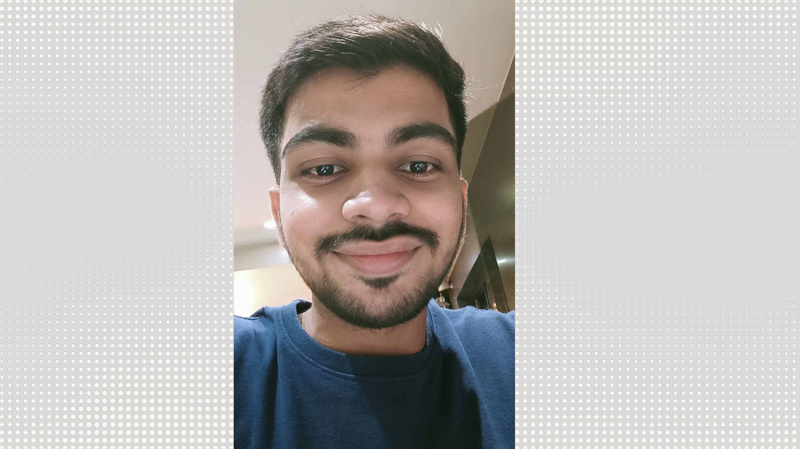

Hii👋 I am Akash Jha from India
FrontEnd Developer👨💻, UI/UX Designer and Technical Writer✍️

My name is Akash Jha and I'm an ambitious and hardworking Frontend Developer, UI/UX Designer and Technical Writer based in India. I have the skills and the passion to create exceptional user experiences and develop modern web applications.

I have a keen eye for details and strive to provide the best quality services which make me an excellent problem solver and a great asset to any employer.I am open source enthusiast and I also have an active presence on Github where I have created a few repositories.
I am an enthusiastic learner, and I find joy in discovering more about the web development processes and technologies. I'm very passionate about learning new skills as well as improving on the existing ones, which makes me an asset in today’s ever-evolving web development landscape.
I'm confident that with my skills and dedication, I can help your team achieve success.
Skills
- HTML
- CSS
- JavaScript
- React
- Bootstrap
- Tailwind CSS
- Git
- GitHub
- Netlify
- VS Code
- Technical Writing
- Figma
- User Experience
- User Interface
- Wireframing
- Prototyping
- Teamwork
- Collaboration
- Communication
- Time Management
- Problem Solving
Projects
Case Studies
Blogs
Services
Podcast
Contact
| Address: | Mumbai, India |
| Phone: | +91-0123456789 |
| Email: | 0123akashjha@gmail.com |